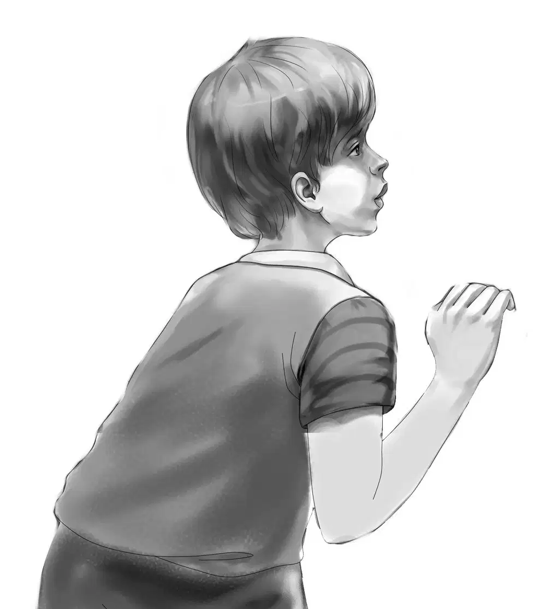
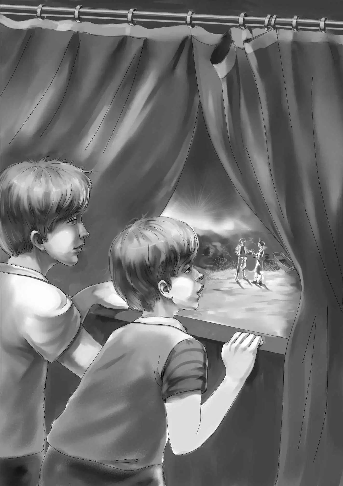
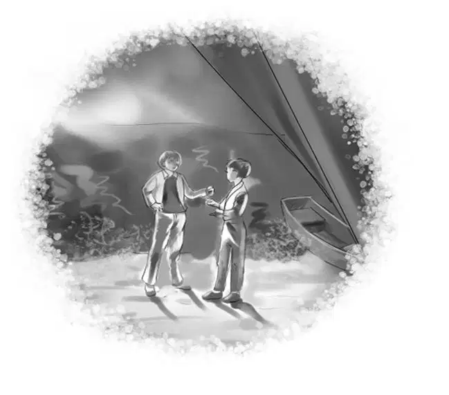
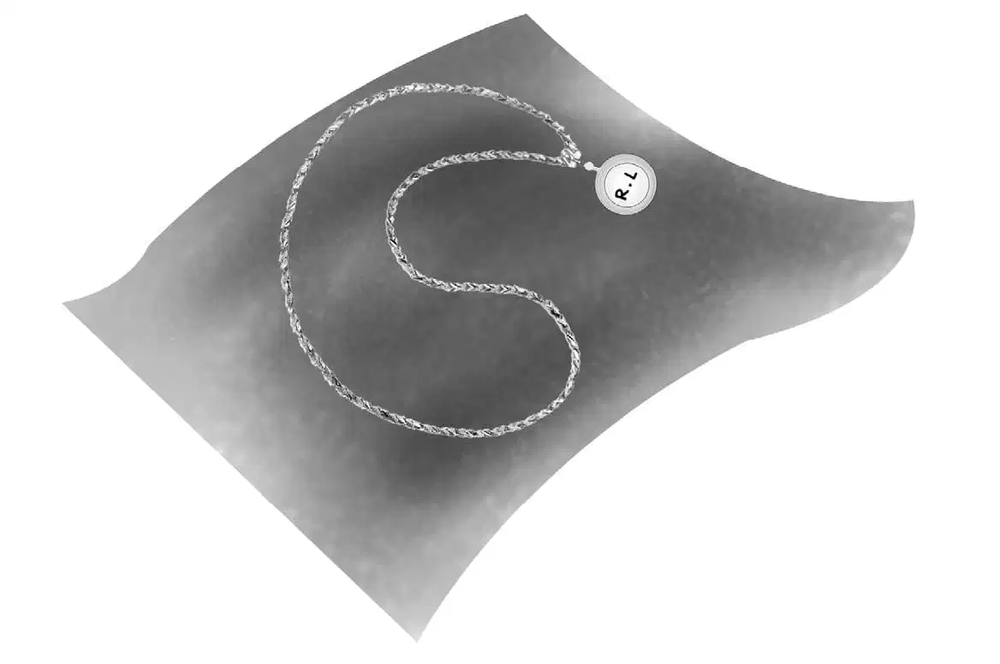
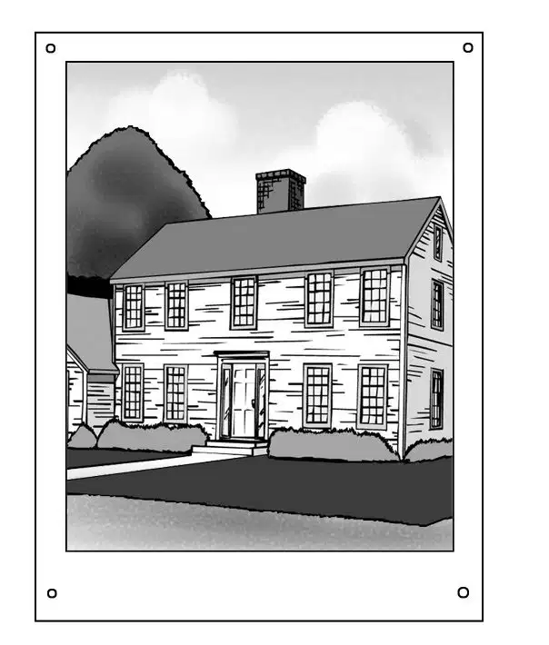
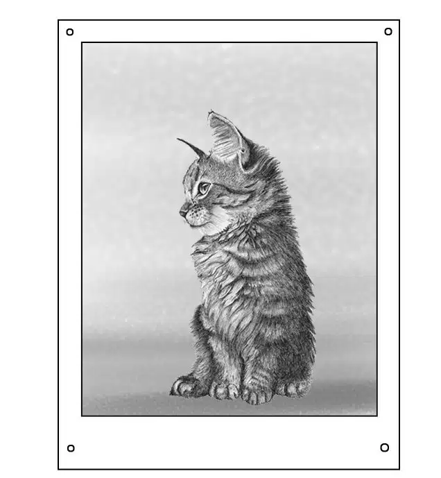

At midnight, Benny woke up suddenly. He felt strange. “What’s the matter with me?” he thought.
Then Benny saw the moon was shining right in his face. It was almost as bright as day. Without waking Henry, Benny slipped out of bed to pull the curtain across the window.
For a minute Benny stood looking out at the beach and the dark water with the bright streak of moonlight on it. Then he stepped quickly back from the window, for somebody was on the beach.
As Benny carefully peered out, he saw two dark figures looking at the trailer house. They were too far away and near the water for Benny to see them very well.
“Now what is going on?”Benny asked himself. “Two people looking at our house.” He tried to tell whether the figures were men or women. “I guess they are men,” he thought. “They have on pants.”
One of the walkers on the beach was much smaller than the other. Could it be a man and a boy? But at that moment Benny remembered that everybody at the beach dressed in pants—men, women, boys, and girls.
The two men ( if they were men ) still stood looking at the trailer. Then one bent over and pointed at the sand, and the two seemed to talk.

Benny wished he could hear what they said. The beach was very quiet, but the water made enough noise to cover the sound of the voices.
“Can they be looking for something?” Benny wondered.“Anyway they are up to no good.I wonder if I ought to wake Henry? I think so.”
Henry was awake at once.“What’s the matter, Ben?” he whispered.
“I don’t know. See those two men looking at our trailer? What are they doing on the beach at midnight?”
“Well,they certainly are not just taking a walk,” whispered Henry. “We’ll watch and see what they do next.”
The boys tried to see the two figures more plainly, but their clothes were dark, and they were fifty feet or more away.
“Look at that,Henry!”Benny said softly. “Quick! Get out of sight.”
The two men were pointing at a spot in the sand. One looked toward the trailer, then got down and began to dig. But the digging did not last long.
At last the two figures seemed to give up. They turned and walked up the beach, looking back as they walked. That was all the boys could see.
“Look, Ben!” whispered Henry suddenly. “Another man!”
As the first two walkers hurried more quickly up the beach, another figure followed at a distance. It seemed to be a man who wore a long cape. He was certainly following the first two. All at once he began to run.
“He is trying to catch the other two!” Benny whispered in excitement.
“Trying to catch up, anyway,” agreed Henry. The man’s cape flapped in the wind. “This is very strange, the whole thing. I don’t think we need to be afraid, Ben. There are lots of neighbors near us.”
The boys still watched the three figures. A dog howled in the distance.
Then the first two men turned off the sand into the beach grass and walked away out of sight. The man in the cape stood still and watched for a minute. Then he turned around and started back.
“Wait!” said Henry in a low voice. “He will go right past us on his way back. Maybe we can see more then.”
Soon the figure went by at a fast pace, but the two boys could not see anything more. He was too far away, down by the water.
“I wish I could see better,” Henry said.
Benny whispered, “That long cape covers him up. It could be a woman and not a man at all.”
“Maybe they are all women,” returned Henry. That seemed so funny that the boys laughed softly. They watched until the last figure had gone down the beach. His steps were slow now.

“I hope whoever it is won’t bother Mr. Lee,” said Benny, feeling worried.
“Mr. Lee can take care of himself,” said Henry. “Don’t forget he has the dog.”
“That’s right. I forgot Richard. If anyone tried to hurt his master, Richard would tear him to pieces. I guess that’s the end of this adventure.”
Benny remembered the footprints he had seen in the sand in the morning, but all at once he was too sleepy to think about anything.
The two boys went back to bed. They slept until morning,when they heard Jessie in the kitchen getting breakfast.They told her about their excitement at midnight.
After breakfast on the sand, with tea ready, the Aldens were not surprised to see Mr. Lee coming toward them. But he walked slowly. When he arrived,he said “Good day” as usual, but he looked tired.
Jessie thought, “Oh, I do hope he isn’t sick. He looks terrible this morning.”
You had a bad night?” she asked as she put the teapot on the tray.
Yes,I really did.I am not a good sleeper, anyway. Are you?” He looked right at Jessie as he said this. It was almost like asking her if she had seen the men walking around on the beach.
“We are all good sleepers,” replied Jessie. “I’m so sorry you have such bad nights. Nothing bothers me, unless I hear somebody calling ‘Jessie.’ Then I wake right up.”
Mr. Lee drank his tea as if he needed it. And after a short time he began to look better. He smiled at the Aldens, perhaps because he could see that they were worried about him.
Suddenly Mr. Lee asked, “Benny, why don’t you try the metal-finder again? Perhaps you’ll find something, perhaps you won’t. It’s always the same chance when you try.”
“I understand,” Benny replied. He took up the metal-finder and looked around at the beach.
Mr. Lee said, “Do you see that piece of post? I’m quite sure there used to be an old dock there because there are several posts like that.Try listening around them. You see, objects usually work their way under the sand to a post or a big rock. Go slowly now.”

Benny obeyed. He ran the ring very, very slowly around the post. Richard stood up. He wagged his tail, but he didn’t understand why this strange boy should be using his master’s rod again. He lay down and whined.
All at once the metal-finder gave a signal that something was nearby.
“Yes,” nodded Mr. Lee, “you’ve found something. Start digging.”
Benny was only too willing to dig. Richard started to get up and then lay down again. Benny went on digging as fast as he could. “You want to dig, Henry?” he asked.
“No, I’d rather watch you,” said Henry.
When the hole was fairly deep, one of Benny’s fingers touched something. He reached in and picked up a round object, covered with wet sand. “Probably another bottle top,” he said, “or the cover of a little jar.” He gave it to Mr. Lee.
With one rub of his fingers, Mr. Lee pushed away the sand and said, “It looks like an old watch.Take it yourself, Benny. You found it, whatever it is.”
Violet handed Benny one of her paint brushes and he carefully brushed off the sand. “It’s a gold locket!” he exclaimed. “How about that?”
“Well, well,” Mr. Lee said, much pleased. “You have had good luck on your second try. Now is the time to be careful.”
“Shall we go into the house?” asked Jessie.
Yes, I think that would be wise,” replied Mr. Lee. “Then if anything drops off the locket, we won’t lose it in the sand.”
The Aldens and Mr. Lee and Richard, the dog, all went into the small living room of the trailer. Henry took the books off a little table and moved it in front of Mr. Lee.
“You’d better show us what to do this time,” Henry said. “We don’t know anything about this.”
Mr. Lee took a small box from his pocket and opened it. It held a strange set of tools. He spread out a piece of thin black silk. He put the locket on top, and a magnifying glass in his eye.
“You look like a watchmaker,” Benny said.
Mr. Lee looked closely at the locket and then exclaimed, “Look, there are initials on the cover: R.L.”
“R.L.,” repeated Jessie. “That should make it easier to find the owner.”
“Don’t be too sure,” Mr. Lee said. “It may take a long time.”
Then with great care, he began to brush both sides of the locket. “I won’t open it just yet,” he explained. “I want to get all the sand out of the edges first.”
“Is it a good locket?” asked Benny.
Mr. Lee was using a fine tool to pick out bits of sand along the crack where the locket opened. He said,“Yes, I think it is quite good. It is probably gold for one thing, and it is old. And for another thing, we may find a puzzle when we open it.”
“Oh, we love mysteries,” Benny exclaimed. “I do hope there’s a mystery inside.”

With a very fine tool Mr. Lee gently pried up the cover of the locket, first on one side and then on the other. At last the locket came open, but not enough to show what, if anything, was inside.
Mr. Lee looked up at Benny. “From now on, it is yours, Benny. You found it. You take it. See what’s inside.”
You take it, Violet,” said Benny. “Your fingers are better with little things than mine are.”
Violet did not hold back. She sat down on the couch as Mr. Lee moved over. Very gently she opened the locket.
“Pictures!” she said. “One of a house, and one of a cat.”
Jessie looked over Violet’s shoulder. “Those pictures look old and faded,” she said. “But the house—look, Benny!”
Benny cried, “The house is the one with the towers!”
“I believe you are right,” Jessie said. “The picture shows only one tower, but I’m sure that is the house here in Beachwood.”
Mr. Lee took one look. He said, “One tower or not, that’s the Tower House on Main Street.”

Benny looked a little unhappy. “How easy to solve this mystery,” he said. “A picture of a cat and a picture of the Tower House and R.L. on the cover. The answers are all right here in Beachwood. Just a quarter of a mile away, and there’s the owner.”
But later on, Benny decided the mystery was more than a quarter of a mile away. And if Benny had looked quickly at Mr. Lee, he might have seen a little smile come and go. Perhaps Mr. Lee guessed the mystery would not be so easy to solve.
After Mr. Lee had put away his tools,he called his dog, picked up his treasure-finder and said goodbye.